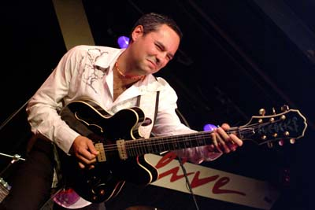

Enrico Crivellaro interview by Anton Vorozheev, 05.03.2009, Original (English)
Антон Ворожеев, 05.03.2009
Какую музыку вы слушаете ради удовольствия?

Этот список был бы очень длинным! Я люблю и стараюсь слушать всю музыку (если в ней, конечно, есть душа) и предпочитаю не только гитарные партии, среди моих кумиров Miles Davis, Ben Webster, Eddie "Lockjaw" Davis и John Coltrane - их я могу слушать вечно. У духовиков есть важное качество, которое стоит взять на заметку гитаристам - они могут получить классный звук без каких-либо примочек. Им нужно дышать, поэтому они не могут играть не прерываясь. Духовые соло напоминают мне человеческую речь, поэтому они звучат так легко и натурально.Мне нравится бразильская музыка - традиционная (например, Joao Gilberto) и современная (Ed Motta и Max Viana играют смесь бразильских ритмов и фанка). Я часто слушаю цыганские песни: Django Reinhardt и его последователей Jimmy Rosenberg, Bireli Lagrene, Angelo Debarre.
Несколько лет назад я открыл для себя потрясающую музыку южной Африки - смесь народной музыки тех мест и джаза (это зовется афро-джазом) - здесь есть просто непередаваемый грув, который вторгается прямо в душу. Один из лучших представителей этого направления - гитарист Jimmy Dludlu.
Всегда был моим любимым соул-певец Donny Hathaway, я также уважаю George Benson, Kenny Burrell, Grant Green и прочих. И, конечно же, у меня страсть к блюзовым гитаристам: Earl Hooker, Magic Sam, Pee Wee Crayton, Tampa Red, Guitar Slim, Wayne Bennett, Luther Tucker, Freddie King, Eddie Taylor, Clarence "Gatemouth" Brown, Otis Rush, Lowell Fulson, T-Bone Walker.
Легко ли вам было научиться чувствовать музыку?
Очень важный вопрос для каждого музыканта; дихотомия между техникой исполнения и чувством всегда вызывала много споров. Когда ты слушаешь таких музыкантов, как B.B. King или Miles Davis, ты понимаешь, что можно выразить больше, играя меньше нот. Они делают акцент не только на нотах, но и на расстоянии между ними. Можно выучить все аккорды и пассажи, но это еще не будет означать, что ты сможешь играть музыку, которая заставит людей трепетать. Публику будоражит именно то, как музыкант обыгрывает каждую ноту, какие чувства в нее вкладывает - это очень сложно, но жизненно необходимо для музыканта. Если ты перестаешь думать когда играешь - это большое достижение. Лучшие выступления у меня получаются именно тогда, когда я отключаю мозг и играю то, что на душу ляжет.
Как вы можете назвать музыку, которую вы делаете?
Эта музыка глубоко уходит корнями в блюз. За многие годы выступлений я сделал смесь из многих направлений американской музыки. Мне нравится джаз, зайдеко, госпел, свинг, и я понимаю, что все они тесно переплетены между собой. Настоящим прогрессом для меня было объединить гитарные составляющие всех этих направлений. Это очень стимулирует и помогает мне найти собственный голос.
Одновременно с этим я стараюсь расширить свои знания о блюзе. Есть очень много стилей внутри этой музыки (уму не постижимо, сколькими различными способами можно сыграть один и тот же шаффл), и понимание каждого из них сильно помогает, например, когда ты играешь на джеме. Блюз несложная музыка, но нужны долгие годы практики, чтобы постичь все нюансы. Поэтому, я бы назвал то, что делаю, в первую очередь - блюзом. Тем не менее, есть еще миллионы способов играть блюз, так что у меня лишь один из них.
Какую музыку вам нравится играть больше всего?
Дюк Эллингтон однажды сказал: «есть два вида музыки - хорошая и плохая». Я полностью его в этом поддерживаю и, насколько могу, играю только хорошую музыку. Я не ставлю четких границ между музыкальными направлениями - мне нравится играть все, главное делать это хорошо и с душой.
Великие гитаристы играют собственную музыку и сразу же узнаваемы, независимо от того, что и как они исполняют. Derek Trucks, к примеру, может играть песню Колтрейна, африканскую мелодию или медленный блюз в одном тоне. Он не пытается играть джаз, как Wes Montgomery - он всегда остается самим собой. А Carlos Santana и B.B. King вообще можно узнать по первой ноте.
Поэтому я стараюсь сделать свой собственный стиль в музыке, он, конечно же, более всего основан на блюзе, тем не менее, это будет именной моей музыкой и ничьей более. Это единственный шанс соединить различные музыкальные направления на грифе одной гитары.
Где вам больше нравится выступать: на большом фестивале или в маленьком клубе?
В последние несколько лет я ездил с концертами по всему миру, и мое впечатление в том, что, к счастью, любители блюза до сих пор не перевелись. Эту музыку всегда слушали лишь немногие, особенно за пределами Северной Америки - и тем приятнее встречать везде толпы людей, которые искренне любят блюз. Близость выступающих к публике в блюзе намного теснее, чем в какой-либо другой музыке. Все мы - одна большая семья, в которой все знают друг друга, и это одна самых замечательных сторон блюза.
У меня есть впечатление, что музыка постепенно перемещается из клубов в сторону больших фестивалей. Есть много отличных блюзовых фестивалей по всему миру, звук, атмосфера и публика там просто замечательные, и играть там сущее удовольствие для меня. Хотя я все-таки скучаю по атмосфере ночных джемов, которая присуща только маленьким клубам.
В наши дни хорошие группе есть везде - и в Азии, и в Европе, и в Австралии, но блюз, в большинстве своем, понимается именно как американская музыка, как потомок американской культуры. По этой причине любая группа из США априори воспринимается как играющая "настоящий блюз". Когда я выступаю в Штатах, Канаде или Австралии, я могу вызвать интерес, да и просто чувствую доброжелательность публики. Люди видят гитариста из Италии, как хорошую и свежую вариацию стереотипа блюзмена. И, разумеется, я очень рад этой незашоренности публики.
Есть ли у вас цели в музыке? Например, стать хедлайнером фестиваля или записать альбом с Робертом Креем?
Я отношусь к той категории музыкантов, которые просто любят играть музыку, не важно, какую. Я с одинаковым удовольствием могу играть для десяти человек или же в большом зале с какой-нибудь знаменитостью перед большой аудиторией. Конечно, когда меня приглашают на концерт или на запись именитые блюзмены, это здорово. Но не потому, что я это рассматриваю это как какую-то хорошую возможность. Но потому, что для меня такие случаи - это шанс встретиться и поиграть с кем-то, кто всегда был кумиром для меня. Что-то вроде сбывающейся мечты. И, хотя я джемовал со многими из своих героев, каждый раз, когда это происходит, у меня мурашки по коже.
Сейчас для меня важно сконцентрироваться на собственной музыке. Последний альбом был записан только моей группой, без гостей и сессионных музыкантов, и это был тщательно продуманный шаг. Я хотел, чтобы альбом показал то, как мы звучим на самом деле, что ожидать от нас на концерте. И, на мой взгляд, он получился настолько искренним, насколько мы могли его таким сделать.
Невероятно здорово было бы записаться с кем-то вроде Роберта Крея, но на данном этапе иметь возможность записывать и играть мою собственную музыку для меня важнее, чем что-либо другое. Я думаю, Роберт Крей прошел именно через это, - его главной целью было стать способным играть собственную музыку, именно поэтому он так уважаем на блюзовой сцене сейчас.
Вы выступали со многими музыкантами. Кто вам больше всего запомнился?
Как я уже сказал, я очень рад играть со своими кумирами. Я был очень счастлив, когда Джеймс Харман, чьи записи я слушал многие годы, пригласил меня сыграть с ним и его группой. Это ни с чем не сравнимое чувство - выступать с теми, кого уважаешь. Для меня это были James Cotton, Luther "Guitar Jr." Johnson and Willie "Big Eyes" Smith of the Muddy Waters Band, Mel Brown, Lester Butler, Finis Tasby, Sugar Blue, Chris Cain, Junior Watson, Ronnie Earl and the Broadcasters, Duke Robillard, Alex Schultz, Kid Ramos, Rick Holmstrom. Мне даже приходилось джемовать с Tracy Gun (Guns'n'Roses), Eric Singer (Kiss), Rick Richards (Georgia Satellites) - очень забавно играть на одной сцене с рок-музыкантами.
Сложно выделить лучший концерт или джем, потому что мне всегда доставляет удовольствие находиться на сцене. В прошлом году я месяц гастролировал с Lee Oscar, одним из основателей легендарной группы War, разработчиком губных гармоник и просто восхитительным человеком. Его музыкальные способности сражают меня наповал, это один из невероятнейших музыкантов, с которыми я встречался. Конечно же, я получил бесценный опыт от этого тура.
То же самое я могу сказать про Джеффа Хейли, я играл с ним несколько раз. Несмотря на то, что он был знаменит за свои блюз-роковые записи, Джефф был потрясающим гитаристом, который знал столько стилей, сколько никто и представить себе не может. Он также был классным тромбонистом, и я испытывал непередаваемые ощущения, когда был с ним на одной сцене.
Не могу не упомянуть Брайана Темплтона - он мой хороший друг и один из лучших блюзовых вокалистов в наше время. Играть с Брайаном для меня - нечто особенное. Я с нетерпением жду наших гастролей по России.
Вы привезете в Россию ваш новый альбом?
Мой новый диск Mojo Zone - The Blues Guitar Of Enrico Crivellaro выйдет 21 апреля на канадско-американском лейбле Electro-Fi. Попробую получить несколько копий перед отъездом в Россию. Но у меня точно будут с собой предыдущие альбомы, в том числе и Live At Bluesiana, записанный в прошлом году на концерте в Австрии вместе с Брайаном Темплтоном.
Anton Vorozheev, 05.03.2009
What kind of music do you like to listen to for your own pleasure?
It would be a real long list! I like all types of music (as long as it has soul, right?), and I try to listen to everything. Especially I try not to listen only to guitarists, and I include John Coltrane and Miles Davis among my influences. I could listen to their music forever. Horn players have great teachings for guitarists: they get a great sound without using stomp boxes, and since they have to breath, they can't play notes all the time. Because of the breathing issue, to me often horn solos resemble a speech and I guess that's why they sound so natural and effortless. Ben Webster and Eddie "Lockjaw" Davis are among my favourite horn players too.
I like to listen to Brazilian music, both traditional (Joao Gilberto...he is a true guitar genius!) and modern (I like the mix of Brazil and Funk that Ed Motta and Max Viana are doing). Gypsy music is often in my cd player, the disciples of Django Reinhardt who are around these days are simply unbelievable - people like Jimmy Rosenberg, Bireli Lagrene, Angelo Debarre. A few years ago I discovered the music from South Africa, and I love that. There is a movement in South Africa called Afro-Jazz, it mixes Jazz with more traditional African harmony, and it has relentless groove. Just fantastic. One of the best exponents of this movement is guitarist Jimmy Dludlu - I listen to his recordings a lot.
One of my all-times favourites is soul-man Donny Hathaway, what a voice. Then George Benson, Kenny Burrell, Grant Green, and I could go on and on...I listen to everything but definitely I have a special passion for blues guitarists like Earl Hooker, Magic Sam, Pee Wee Crayton, Tampa Red, Guitar Slim, Wayne Bennett, Luther Tucker, Freddie King, Eddie Taylor, Clarence "Gatemouth" Brown, Otis Rush, Lowell Fulson, T-Bone Walker.
Was it easy for you to learn the sence of music? The sence that music is not the list of chords but something that makes a soul thrill.
This is a very important question, and the dichotomy between technique and feeling/expression has always been at the root of every debate about music. When you listen to musicians like B.B. King or Miles Davis, it becomes clear that their way of playing incorporates the concept that you can actually say more by playing less notes. They rely not just on the notes they play, but also on the space between them. You can learn every chord and every scale, but that doesn't mean that you'll be able to make music that moves people. What makes a difference, and gives your audience a thrill, is the ability to give a meaning to every note that you play, and this is a very extremely difficult thing to achieve.
I think the breakthrough happens when you stop thinking while you play. Oftentimes we musicians get carried away, and try to play everything that we study. But I realize myself that the best concerts are when I stop thinking, and just play whatever comes. That's when your heart is playing music, and no longer your brain.
How could you name the music style you play?
My playing is deeply rooted in Blues music. Yet over the years I have been trying to incorporate different elements of American music into the way I play. I have always loved genres like jazz, cajun, gospel, swing, and so on, and I have always believed that they are all closely related. Musicians such as Jimmy Bryant, Johnny Burnette, Jimmy McGriff, Guitar Slim, Harry "Sweets" Edison or Grant Green (and many, many more!) are all equally important to me. Trying to develop a guitar style which encompasses all of these influences has therefore been a natural progression for me. It is an ongoing process that is without a doubt challenging, but also very stimulating. I feel that it is helping me find my own voice as a guitarist. However, at the same time I am constantly trying to widen my knowledge of the blues. Particularly I am keen on understanding the various blues styles (it's amazing how many different ways there are to play a shuffle groove!), and on using the acquaintance with diverse styles to avoid being out of context when I play in a band or I back up a singer. Blues in fact can seem to be a very simple kind of music, but in reality it takes a lifetime to appreciate all of its nuances.
Therefore, I would define our music style as Blues - but I am aware that there are so many ways to play this genre, that ours is just one of the possible approaches to it.
When your new album will be on sale and will you bring some of the CDs to Russia?
The new CD is entitled "Mojo Zone - The Blues Guitar Of Enrico Crivellaro", and it is released by the Canadian/US label Electro-Fi. The official release date is April 21st, but the first few copies are ready, and I am really hoping to be able to receive them from Canada before we come to Russia! However we will have our previous CD's, including "Live At Bluesiana", which is a double CD that Brian Templeton and I recorded live last year in Austria.
Your concert activity is very intensive. What kind of gig you like more and why: playing on a big festival (like Notodden) or in a small club?
In the last few years I have been touring quite a lot in several countries of the world and my impression is that, luckily, blues lovers are not becoming extinct! Blues has always been "niche music", especially outside of North America, but it's nice to meet so many enthusiasts everywhere I get to go. The relationship between musicians and audiences in the blues universe is much more intimate than in most other kinds of music, and that's true in every country and continent. It is basically a big family where we all know each other, and that's one of the great things about the blues.
My impression is that live music is increasingly shifting away from clubs (although there are still many good ones) to move to festivals. The festival scene is excellent indeed, all over the world. Everywhere there are wonderful jazz and blues festivals that offer great music and ambiance. I kind of miss, though, that "late-night jam session" vibe which is only associated with small, funky clubs.
These days there are very good blues bands everywhere--I've seen great players in Asia, Europe and Australia, but the Blues is still largely perceived as traditional American music and as an offspring of American culture. Therefore a touring band from the United States is still seen as the "real thing" outside of America, which indeed is true. On the other hand, I find that when I play in the United States, Canada or Australia I can generate a lot of interest and I simply feel very welcome--people see a guitarist from Italy as a nice and refreshing diversion from the stereotypical bluesman, and of course I very much appreciate this open-mindedness.
Do you have any goals in music? For example, to play in Chicago or to make an album with Robert Cray? Or you just play music and it doesn't matter what goes on around?
I am one of those people who just like to play music, no matter what. I equally appreciate playing in a small club for ten people, or at a huge venue with someone famous in front of a big audience... Obviously it's very nice when I get a chance to play and record with some great musicians, but not really because I see that as a big opportunity. Rather, I see it as a very special occasion when I get to meet and play with someone who has always been an idol for me. It is a sort of a dream-come-true, and although I have been lucky to jam with several of my heroes, every time that this happens I still get goosebumps.
However lately it has become more important for me to concentrate on my own music. It was a precise choice to record the latest CD, "Mojo Zone", without special guests, added musicians, and so on. I wanted the CD to represent exactly what we sound like when we play a live concert, and to be as sincere as possible. As fantastic as it would be to make a record with someone like Robert Cray, as you mentioned, at this stage being able to record and play my own music means more to me than anything else. I think Robert Cray went through the same thoughts - his main goal was to be able to do his own music, and that's how he has become so important and recognizable in the music scene.
You have played with a lot of musicians. And what jam was the most important and memorable for you?
I feel very lucky because I got to play, and get to play, with some of the musicians who were my heroes when I was a teenager. James Harman, for instance - I had listened to his records for years and years, and then one day I am there on stage with him because he wants me in his band. I think that nothing compares to that, for a musician...making music with the people you look up to. I have played with many such people during these years. James Cotton, Luther "Guitar Jr." Johnson and Willie "Big Eyes" Smith of the Muddy Waters Band, Mel Brown, Lester Butler, Finis Tasby, Sugar Blue, Chris Cain, Junior Watson, Ronnie Earl and the Broadcasters, Duke Robillard, Alex Schultz, Kid Ramos, Rick Holmstrom, and many, many more.
I even got to jam with Tracy Gun (Guns'n'Roses), Eric Singer (Kiss), Rick Richards (Georgia Satellites) - when it happens it's pretty cool to be on stage with rockstars!
I always enjoy being on stage making music, therefore it is hard for me to point out the best jam/concert/tour ever. However, I got a chance to do a month-long tour with Lee Oskar last year. Lee is the founder of the seminal group "War", the designer of the Lee Oskar Harmonicas, and simply an amazing person. His playing and his musicality just blew me away, and playing with him was an out-of-this-world experience. One of the most incredible musicians I have ever met.
So was Jeff Healey, with whom I've had the chance to play in a couple of occasions. Although famous for his rock-blues records, Jeff was a phenomenal guitarist who knew many more styles than the big public could even imagine. He was an incredible jazz trumpeter as well, and playing with him has truly been one of the highlights of my whole life.
I want to dedicate this last line to Brian Templeton, who is a dear friend of mine, and one of the greatest blues singers around these days. Playing with Brian is always very special for me, and I am looking forward to coming to Russia again with him!
You make a lot of different kinds of music - jazz, blues, swing. But what kind of music do you like to play more than any other?
Duke Ellington used to say "there are only two types of music - good or bad!". I can only agree, and as much as I can, I try to play only good music! So I don't see a big distinction between genres, and I like to play everything, as long as I can make it sound good and soulful.
Yet I come from a blues background, and I know that's my strongest point as a guitarist. I am definitely a better blues guitarist, than I am a jazz guitarist. Blues is also where my heart is, and I can never get tired of playing a slow blues. But then again, the greatest guitarists are those who play with their own style and are instantly recognizable regardless of the genre of music they play. Derek Trucks is a good example - he will play a Coltrane tune, an African song or a blues all with the same sound. He doesn't try to play like Wes Montgomery over a jazz tune, he is always Derek Trucks, and he sounds phenomenal although he is not the archetypal jazz guitarist. Carlos Santana and B.B. King have the same quality, no matter what they play you will always recognize them by the first note they hit - think of the records B.B. made with the Crusaders for instance...
So, what I try to do is have my own style, and apply that to whichever song I am playing. It's not easy, but that is the only way to connect different musical genres through the same guitar.